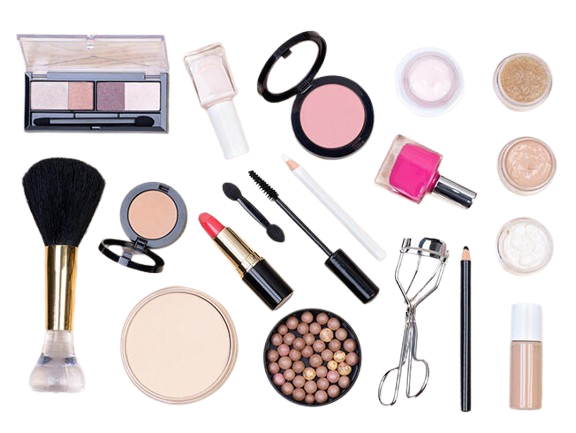

.png)
VIDEO: APRENDE A MAQUILLARTE
Este video es una guía completa para quienes desean aprender a maquillarse desde cero o mejorar sus técnicas actuales. A lo largo del contenido, se explican de manera sencilla y paso a paso los fundamentos del maquillaje, empezando por la preparación correcta de la piel, que es la base para lograr un acabado suave, luminoso y duradero.
También se muestran los tipos de productos esenciales, cómo elegirlos según tu tipo de piel y el orden ideal para aplicarlos.
El video enseña técnicas básicas como la aplicación de la base, la corrección de imperfecciones, el sellado del maquillaje y la creación de sombras suaves para los ojos que realzan la mirada sin necesidad de ser experta. Además, se explican tips prácticos para aprender a difuminar mejor,
escoger los tonos adecuados según tu color de piel y lograr un acabado natural o más glam según el estilo que prefieras.
VER VIDEO

NOTICIA
En esta noticia se presenta un análisis completo sobre los productos de maquillaje más vendidos del momento, destacando las tendencias que están marcando la industria de la belleza en este año. El contenido explica cómo ciertas marcas y productos se han posicionado en lo más alto de las listas de ventas,
gracias a su calidad, duración y resultados visibles incluso para quienes no son expertas en maquillaje.
La noticia detalla categorías clave como bases de alta cobertura, labiales de larga duración, máscaras de pestañas que aportan volumen extremo y paletas de sombras que se han vuelto indispensables entre los consumidores. También se mencionan productos que han ganado popularidad a través de redes sociales,
donde influencers y maquilladores profesionales comparten reseñas, demostraciones y tutoriales que impulsan la demanda.
VER NOTICIA